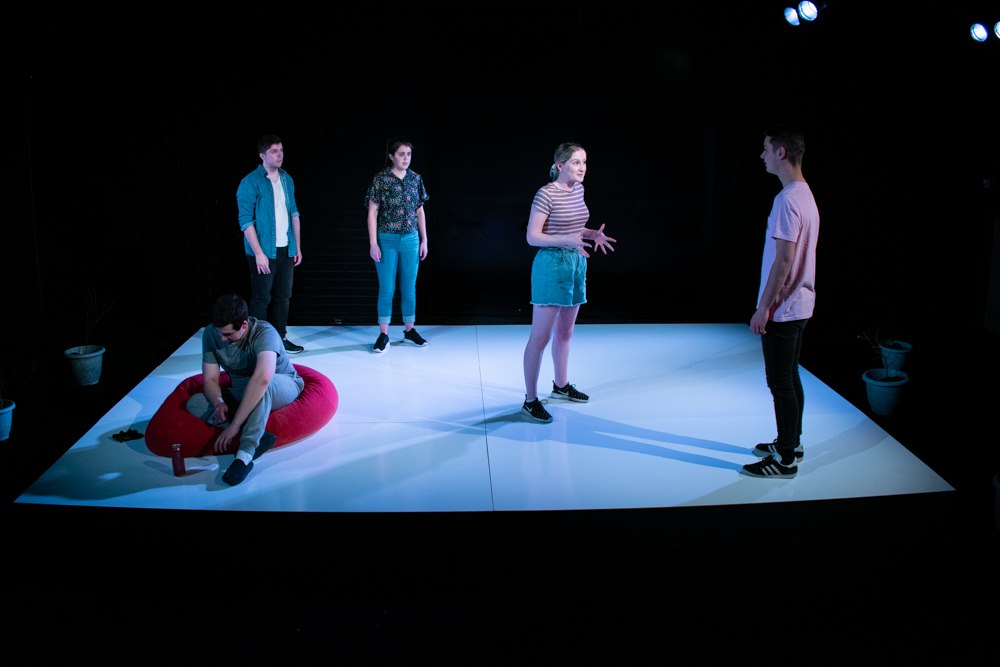

Portfolio
Upcoming:
Canberra Youth Theatre | Possabiility | 2019 | Stage Manager / Lighting Designer
Past work:
Theater
Canberra Youth Theatre | Collapse by Grace de Morgan | 2019 | Stage Manager / Associate Lighting Designer
Canberra College | Cymbeline | 2019 | Technical Director / Sound Designer
Canberra Youth Theatre | I'M ME Festival | 2019 | Technical Director / Lighting Designer
Canberra Youth Theatre | Faster | 2018 | Lighting Designer / Stage Manager / Technical Director
Canberra Youth Theatre | Fading | 2018 | Lighting Designer / Lighting Operation
Canberra College | Caucasian Chalk Circle | 2018 | Lighting Design / Assistant Stage Manager
Canberra Youth Theatre | Filtered | 2018 | Lighting Operation
Canberra Youth Theatre | Versions of Us | 2017 | Lighting Designer / Video Content Creation / Sound Operation
Canberra Youth Theatre | Poem Every Day | 2017 | Lighting Designer / Lighting Operation
Canberra Youth Theatre | The Verbatim Project (Sydney Tour) | 2017 | Lighting Design / Sound & Video Operation
Canberra Youth Theatre | The Greek Project | 2016 | Lighting Design / Lighting Operation
Canberra Youth Theatre | The Verbatim Project | 2016 | Lighting Design / Sound Operation

Live Production
Sidestage Production Services | Unite Conference | 2019 | Lighting Operation
Sidestage Production Services | BomFunk Mid Year Show | 2019 | Systems Tech
Sidestage Production Services | Spiderbait @ UC Refectory | 2019 | Systems Tech / Support Acts Lighting Operation
Sidestage Production Services | Mallrat @ UC Refectory | 2019 | Lighitng Designer / Systems Tech / Support Acts Lighting Operation
Sidestage Production Services | Hands Like Houses @ UC Refectory | 2019 | Canberra Production Crew
Sidestage Production Services | Vera Blue | 2019 | Systems Tech
Sidestage Production Services | Heat Festival | 2019 | Lighting Design & Operation
Sidestage Production Services | Allday @ UC Refectory | 2018 | Systems Tech

Dance
Canberra College | Dance Showcase Semester 1 | 2019 | Lighting Designer / Programmer / Operation
Canberra College | Dance Showcase Semester 2 | 2018 | Lighting Designer / Programmer / Operation
Sidestage Production Services | Imperial Russian Ballet @ CCPAC Theatre | 2018 | Venue Technician / Lighting Rigging
Canberra College | Dance Showcase Semester 1 | 2018 | Lighting Designer / Programmer / Operation
Click here to login if you are a member that Ethan has given infroantion to.